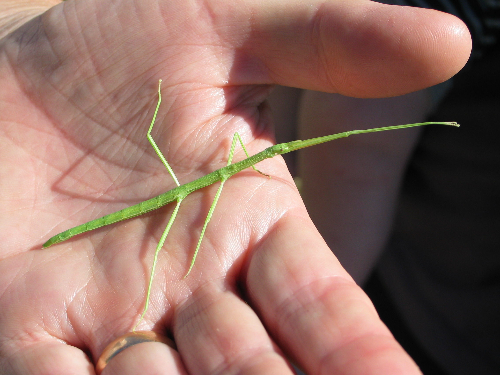

Le phasme gaulois

Clonopsis gallica est le seul qu'on peut trouver dans notre région. Il se nourrit de ronces. Ses antennes sont plus courtes que celles de Carausius morosus (plus petites que sa tête), et il est légèrement plus petit (6 à 7 cm).